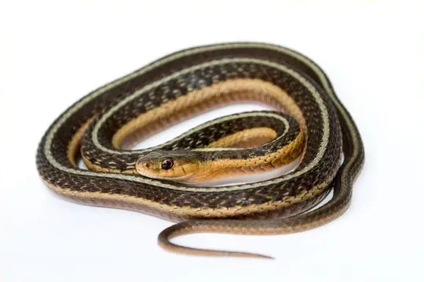
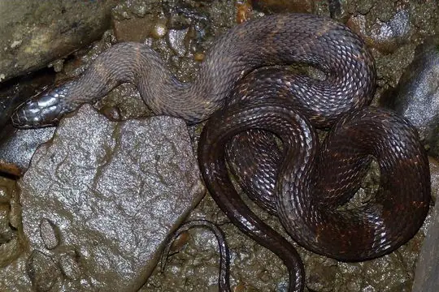
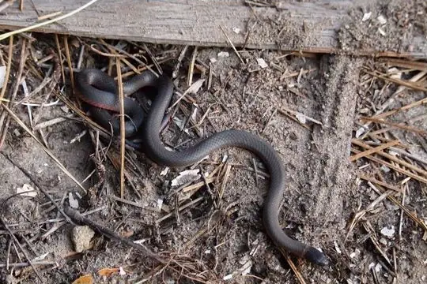
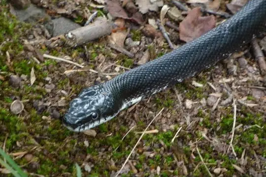
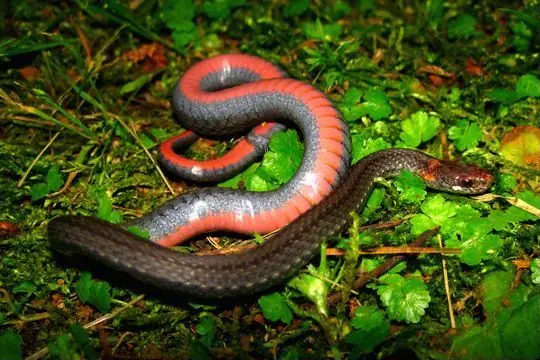
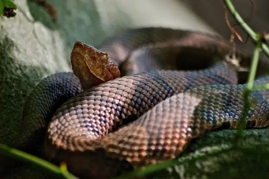
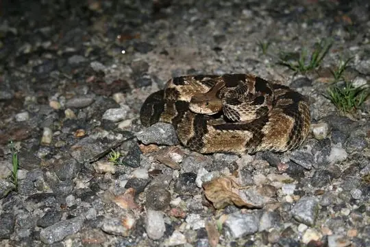
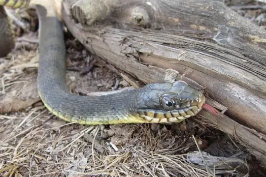

Snakes of Virginia
A state of the United States
26 living snake species are recorded in Virginia, a state of the United States, in SnakeList's data: 3 venomous and 23 non-venomous, from 2 families. 19 more are possible: recorded in the United States without state detail.
- 26living species
- 3venomous
- 23non-venomous
- 2families
- 19more possible
Virginia is a state of the United States. SnakeList records where snakes live by state, not by exact spot, so a species counted here may live in only part of it. The counts are unique living species; fossils, extinct species and introduced snakes are listed apart. All snakes of the United States.
The 26 living species recorded in Virginia
Every living snake species SnakeList records in Virginia. Each is recorded somewhere in the state, not necessarily all over it.
- Black Kingsnake Lampropeltis nigra
- Brown Water Snake (taxispilota) Nerodia taxispilota
- Common Gartersnake Thamnophis sirtalis
- Common Kingsnake Lampropeltis getula
- Common Watersnake Nerodia sipedon
- Common Wormsnake Carphophis amoenus
- Copperhead Agkistrodon contortrix venomous
- Corn Snake Pantherophis guttatus
- Cottonmouth Agkistrodon piscivorus venomous
- Crayfish Snake Liodytes rigida
- Eastern Hognose Snake Heterodon platirhinos
- Eastern Rat Snake Pantherophis alleghaniensis
- Eastern Ribbonsnake Thamnophis saurita
- Mole Snake Lampropeltis rhombomaculata
- Mud Snake (abacura) Farancia abacura
- Pine Snake Pituophis melanoleucus
- Plainbelly Water Snake Nerodia erythrogaster
- Rainbow Snake Farancia erytrogramma
- Redbelly Snake Storeria occipitomaculata
- Ringneck Snake Diadophis punctatus
- Rough Earthsnake Haldea striatula
- Scarlet Kingsnake Lampropeltis elapsoides
- Scarlet Snake Cemophora coccinea
- Smooth Earth Snake Virginia valeriae
- Southeastern Crowned Snake Tantilla coronata
- Timber Rattlesnake Crotalus horridus venomous
No snake here matches that.
Possible here: country-level records only
SnakeList records these 19 species in the United States without saying in which state, so each may or may not live in Virginia. They are not counted among the species recorded here.
- Antilles Racer Alsophis antillensis
- Atlantic Central American Milksnake Lampropeltis polyzona
- Brown Snake Storeria dekayi
- Bullsnake Pituophis catenifer
- Colorado Desert Shovelnose Snake Chionactis annulata
- Cuban Boa Chilabothrus angulifer
- Diamondback Water Snake Nerodia rhombifer
- Lined Ground Snake Lygophis lineatus
- Mexican Hook-nosed Snake Ficimia olivacea
- Milk Snake Lampropeltis triangulum
- Navassa Dwarf Boa Tropidophis bucculentus
- New Mexico Threadsnake Rena dissecta
- Night Snake Hypsiglena torquata
- Queen Snake Regina septemvittata
- Racer Coluber constrictor
- Sand Snake (straminea) Sonora straminea
- Sharptail Snake Contia tenuis
- Smooth Green Snake Opheodrys vernalis
- Western Rattlesnake Crotalus oreganus venomous
No snake here matches that.
Venomous and non-venomous
Venomous: 3 of 26Non-venomous: 23
3 are listed by SnakeList as dangerous to people: Copperhead Agkistrodon contortrix, Cottonmouth Agkistrodon piscivorus, Timber Rattlesnake Crotalus horridus.
Snake families
Living species recorded here, by family.
Habitats from reviewed species accounts
What SnakeList’s reviewed, sourced accounts say about where each species lives in general, across its range. They do not describe Virginia in particular. The other 19 species here have no reviewed account yet, so nothing is said about their habitats.
- Common Kingsnake Lampropeltis getula: Uses a wide range of habitats, from pine woods and hardwood forest to the edges of swamps, fields and farmland. Source: Florida Museum of Natural History, Wikipedia.
- Copperhead Agkistrodon contortrix: In many areas it lives in high, dry, rocky, well-wooded places dominated by oaks and hickories. Source: Indiana Herp Atlas.
- Corn Snake Pantherophis guttatus: Forest edges and woodland, fields, swamps and hardwood hammocks; it also turns up in barns and abandoned buildings, where it hunts rodents. Source: A-Z Animals, Outforia.
- Cottonmouth Agkistrodon piscivorus: Almost any habitat with water: swamps, marshes, slow rivers and streams, lake and pond edges, ditches and bottomland forest. Studied home ranges were small, around one hectare, and usually included a stream or lake. Source: Animal Diversity Web, University of Michigan, Tennessee Wildlife Resources Agency.
- Eastern Hognose Snake Heterodon platirhinos: Open areas with sandy, loose soils. Loose soil is important for nesting and egg-laying, and for digging out prey. Source: Government of Canada, Species at Risk Public Registry, Wikipedia.
- Eastern Rat Snake Pantherophis alleghaniensis: Almost any place rich in rodents and with somewhere to climb: forests, woodland edges, fields, swamps and farm buildings. Source: Gopher Tortoise Council, Wikipedia.
- Timber Rattlesnake Crotalus horridus: In western Virginia it lives in upland hardwood and mixed oak-pine forest with rocky ledges or talus slopes. Source: Virginia Herpetological Society.
Biggest cities
The biggest cities in Virginia from SnakeList’s city list, biggest first. SnakeList has no records for the cities themselves.
- Virginia Beach
- Norfolk
- Chesapeake
- Richmond
Neighbouring states
Places in SnakeList that share a border with Virginia, with their living species.
- Kentucky 23 species
- Maryland 18 species
- North Carolina 33 species
- Tennessee 29 species
- West Virginia 11 species
Most recorded worldwide
A global ranking, not a local one. These are the species here with research-grade iNaturalist records in the most places across their whole range (worldwide records). SnakeList has no counts of records within Virginia, so this says nothing about which snakes are commonest here.

Common GartersnakeThamnophis sirtalis
Common WatersnakeNerodia sipedon
Ringneck SnakeDiadophis punctatus
Eastern Rat SnakePantherophis alleghaniensis
Redbelly SnakeStoreria occipitomaculata
CopperheadAgkistrodon contortrix
Timber RattlesnakeCrotalus horridus
Plainbelly Water SnakeNerodia erythrogaster
Who described them
The scientists who first described the species above, and when.
- Common Gartersnake Thamnophis sirtalis - described by Linnaeus in 1758 (under another genus name)
- Common Watersnake Nerodia sipedon -
- Ringneck Snake Diadophis punctatus -
- Eastern Rat Snake Pantherophis alleghaniensis - described by Holbrook in 1836 (under another genus name)
- Redbelly Snake Storeria occipitomaculata -
- Copperhead Agkistrodon contortrix - described by Linnaeus in 1766 (under another genus name)
- Timber Rattlesnake Crotalus horridus - described by Linnaeus in 1758
- Plainbelly Water Snake Nerodia erythrogaster -
Names and dates come from SnakeList’s reviewed species accounts; the others come from Wikidata (CC0) and are only shown if they pass basic checks.